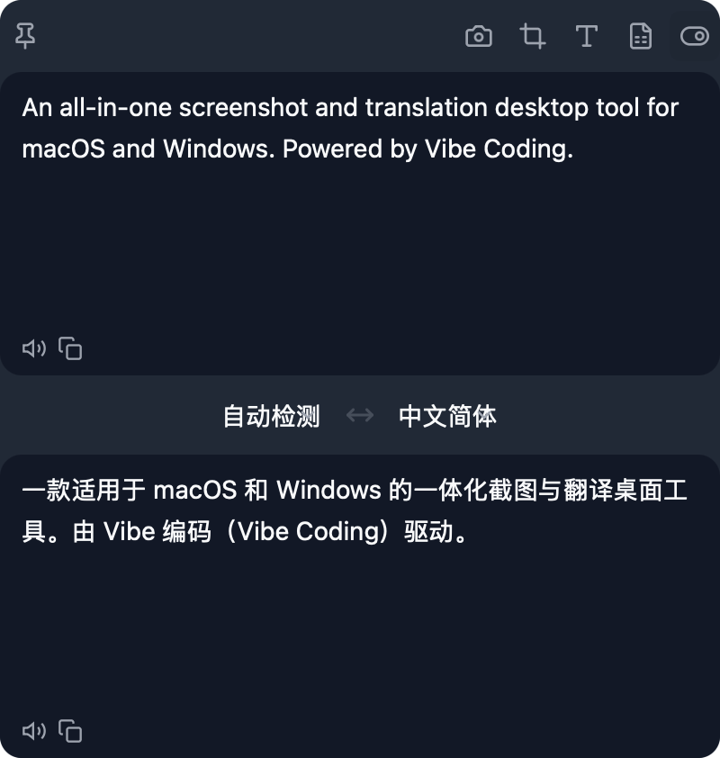
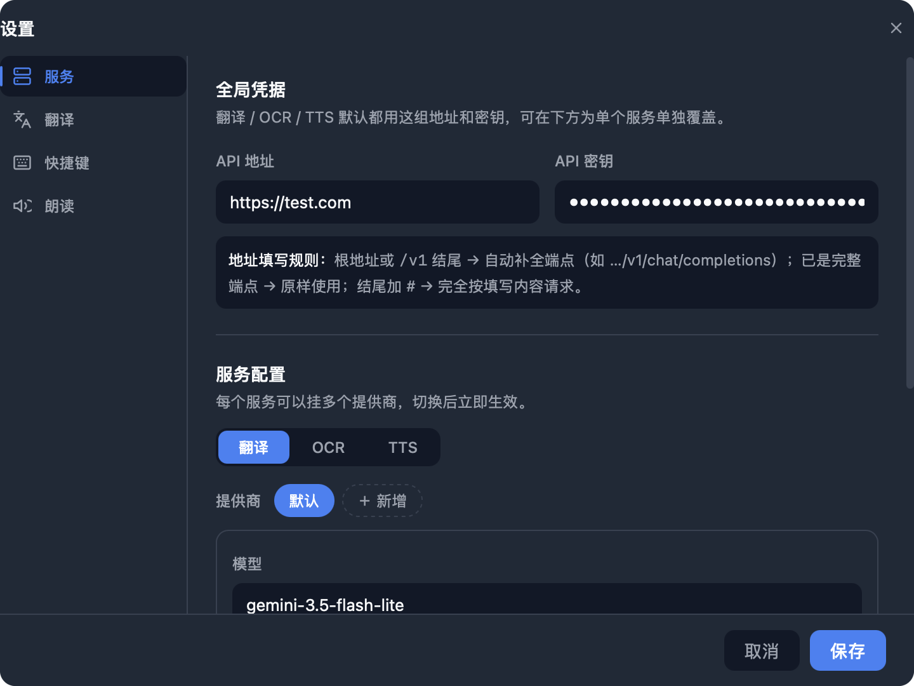
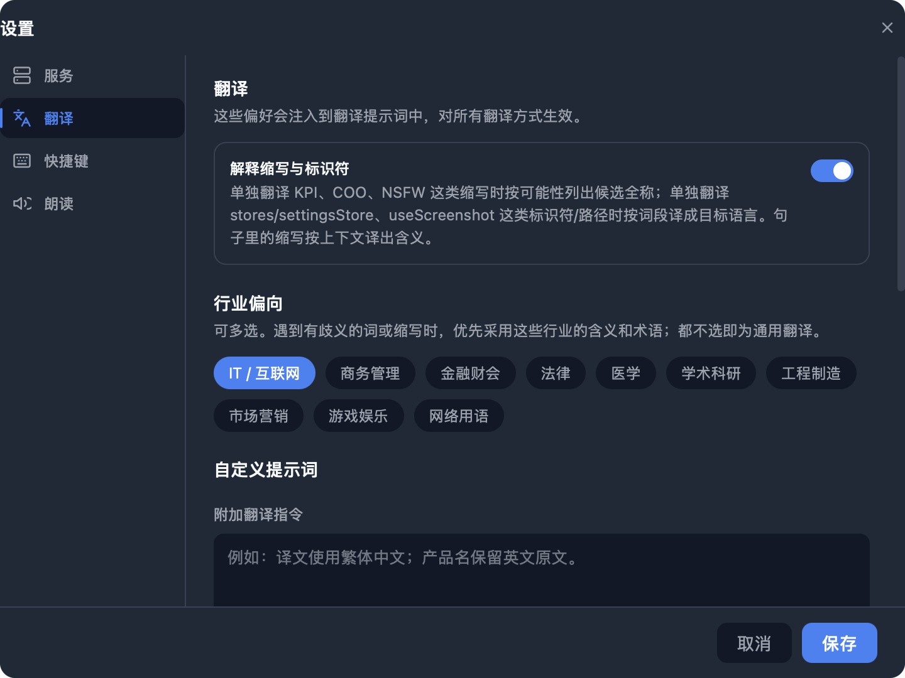
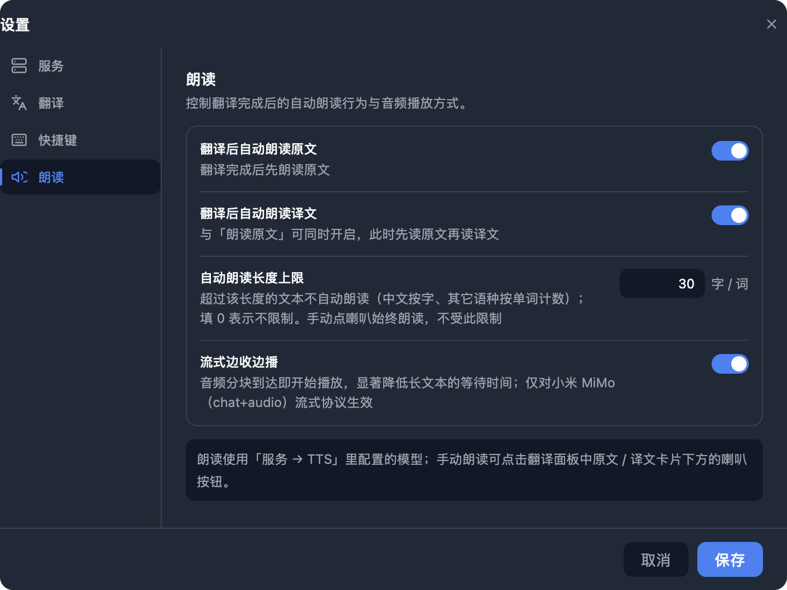
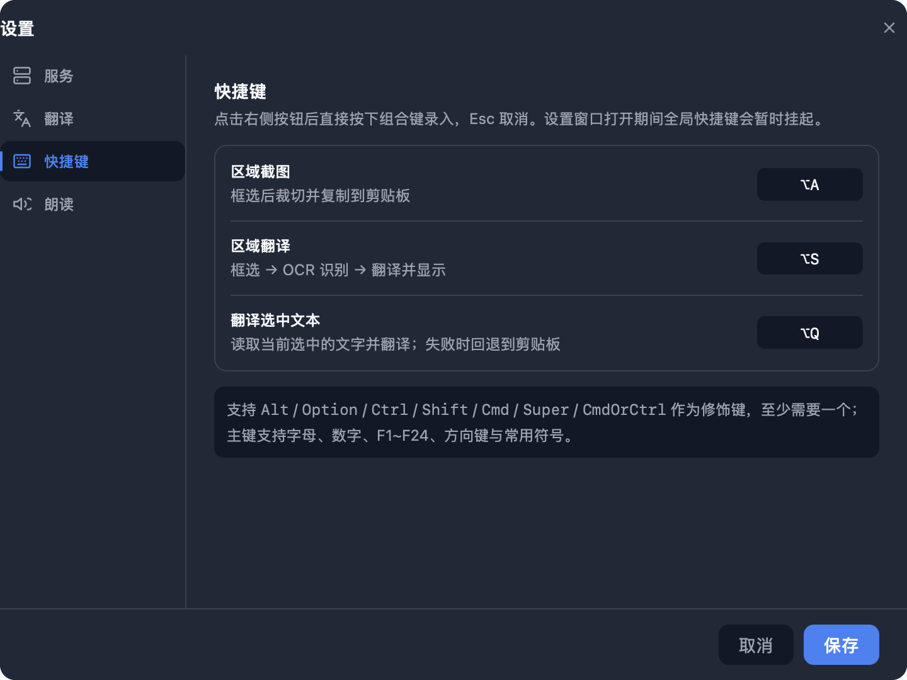
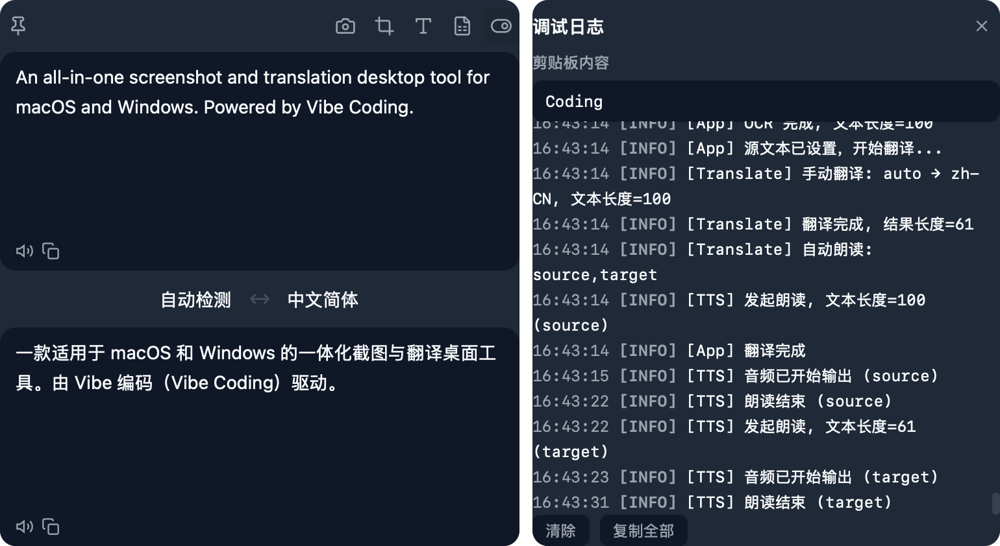

01
一键直达
One keystroke
三个全局快捷键覆盖三种来源：屏幕区域、选中文本、剪贴板。主窗口失焦即隐藏，不占桌面，也不抢焦点。
框住它，就读懂它。
Frame it. Read it. Hear it.
一个常驻托盘的小窗口。按下 ⌥S 框选屏幕任意一块，视觉模型读出里面的文字，翻译好再摆到你眼前；按 ⌥A 截图标注直接进剪贴板。翻译、OCR、朗读都接你自己选的模型。
看不懂的，框起来。
ANYTHING ON SCREEN, IN YOUR LANGUAGE复制、打开翻译网页、粘贴、再切回来——这一串动作打断的不只是手，还有思路。TransShot 把它压缩成一个快捷键。
三个全局快捷键覆盖三种来源：屏幕区域、选中文本、剪贴板。主窗口失焦即隐藏，不占桌面，也不抢焦点。
翻译、OCR、朗读三条链路各自挂提供商：OpenAI、DeepSeek、SiliconFlow、本地 Ollama 都行。没填的字段自动回退到全局配置。
Rust 后端只把你框住的那一块、缩到 2048px 以内再编码上传；朗读由系统音频直接播放，窗口隐藏也照样出声。
下面每一张都是 TransShot 的实机截图（深色主题），应用会跟随系统自动切换深浅色。






不是先框再截。TransShot 在你按键的那一刻就把所有显示器拍下来，覆盖层显示的是这张冻结画面——滚动的视频字幕、一闪而过的弹窗，都能稳稳框住。
鼠标悬停在某个窗口上会自动吸附出它的边界，一次点击选中整窗。截图模式下还能接着标注：矩形、箭头、画笔、马赛克、文字。
只有选区被送去识别，最长边限制在约 2048px，无透明通道时编码为 JPEG。解码、缩放、重编码都放在后台线程，界面不会卡一下。
自动检测源语言，15 种目标语言任选。原文与译文各有朗读和复制按钮，也可以设置翻译后自动朗读，并给自动朗读设长度上限。
前端 React 19 负责交互，Rust + Tokio 负责一切重活。下面是一次区域翻译真正走过的路径。
emit hotkey-action
统一由 App 路由
xcap 全屏捕获
每屏一个覆盖层
逻辑 ↔ 物理换算
spawn_blocking
≤2048px · JPEG
共享 reqwest 连接
PCM → rodio/cpal
不经过 WebView
所有窗口先隐藏让出一帧再销毁，绕开 macOS WebKit 在关闭活跃 webview 时的偶发崩溃。
只传选区、限制尺寸、优先 JPEG；CPU 密集操作进 blocking 线程池，主线程只管响应。
没有我们的服务器。截图和文本只发往你配置的接口；日志不记录 API Key、原文全文或 base64。
端点自适应拼接：填根地址补 /v1，填完整端点原样使用，结尾加 # 则逐字请求。每个提供商可用 JSON 覆盖请求体。
SETTINGS · OCR PROVIDER · EXTRA// 只覆盖你想改的字段，其余回退到全局 { "max_tokens": 1024, "temperature": 0 }
BASE URL · 自适应拼接https://api.example.com → /v1/chat/completions https://api.example.com/v4 → /v4/chat/completions https://host/custom/endpoint → 原样使用 https://host/raw# → 完全按原文请求
群里发来的报错是张图，复制不了。按 ⌥S 框住堆栈那几行，译文直接出现在小窗里，原文也在——技术名词保留原样，一眼对上日志。
PDF 里的图注是嵌在图片里的。框住它，读完译文再点朗读，边听边看图。正文段落则直接选中按 ⌥Q，连框选都省了。
⌥A 截下界面，箭头指向问题、马赛克盖住用户信息、写一行字说明，回车进剪贴板直接粘到 Slack。需要留档就点下载存成图片。
TransShot 是 MIT 开源软件，不卖订阅。三档的区别只在于你让它连向哪里。
填一个 API 地址与 Key 即可，默认指向 SiliconFlow。
每条链路挂不同服务商，各取所长。
模型调用的价格以各服务商官网为准，TransShot 不经手任何费用。
以前看到图片里的外文要先找个 OCR 网站，现在框一下就完了。最喜欢的是它不抢焦点，翻完小窗自己就藏起来。
OCR 用一个视觉模型、翻译用另一个专做翻译的模型，各配各的 Key，这种自由度在同类工具里很少见。
截图标注那套快捷键很顺手，1 到 5 切工具，马赛克打完回车就进剪贴板，比系统截图少好几步。
以上为典型使用场景的描述，欢迎在 GitHub Issues 分享你的真实体验。
没找到答案？到 GitHub Issues 提问，或者直接读源码——它就在那里。
软件本身以 MIT 协议开源，没有订阅、没有会员。你需要的只是一个模型服务：用云端服务商就按它们的价格付费，用本地 Ollama 就完全不花钱。
只会发往你在设置里填写的 API 地址，而且只发框选的那一块，不是整屏。TransShot 没有自己的服务器，也不收集使用数据。
支持 macOS（Apple Silicon，.dmg）和 Windows（.msi）。macOS 首次使用需在「隐私与安全性」中授予「屏幕录制」；翻译选中文本（⌥Q）还需要「辅助功能」权限，首次按下时应用会主动弹出请求。
任何 OpenAI 兼容接口：OpenAI、DeepSeek、SiliconFlow、Ollama、小米 MiMo 等。OCR 需要支持图像输入的视觉模型；默认配置分别是 Hunyuan-MT-7B（翻译）、Qwen3.5-4B（OCR）、CosyVoice2-0.5B（朗读）。
在「设置 → 快捷键」重新录入即可，保存后立即生效，无需重启。修饰键支持 Alt / Option / Ctrl / Shift / Cmd，主键支持字母、数字、F1–F24 与方向键。设置窗口打开期间全局快捷键会暂时挂起，方便录入。
因为音频不在网页里播放。合成好的 PCM 由 Rust 直接送进系统输出设备，避开了 WebView 在后台时音频上下文空转、完全无声的问题。